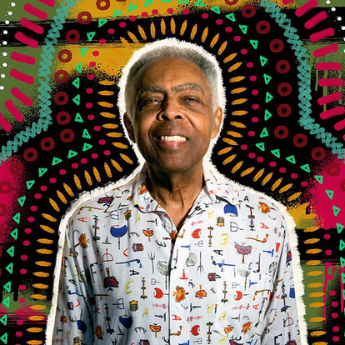

Artista do mês
Gilberto Gil
Gilberto Gil (1942) é um músico brasileiro,
cantor, compositor e instrumentista foi um
dos criadores do Movimento Tropicalista nos
anos 60. É autor de músicas consagradas como
“Procissão”, “Domingo no Parque” e “Aquele Abraço”.
Fonte: ebiografia.com
